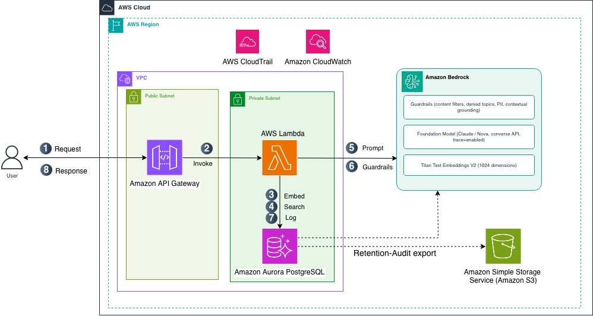
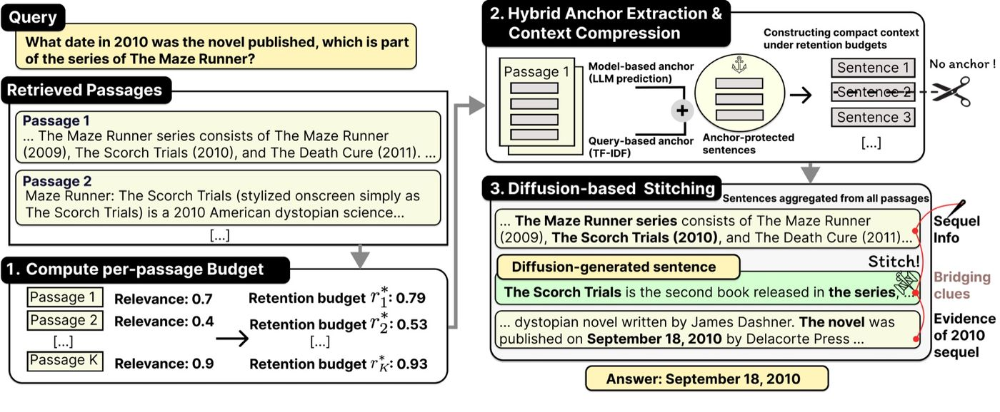
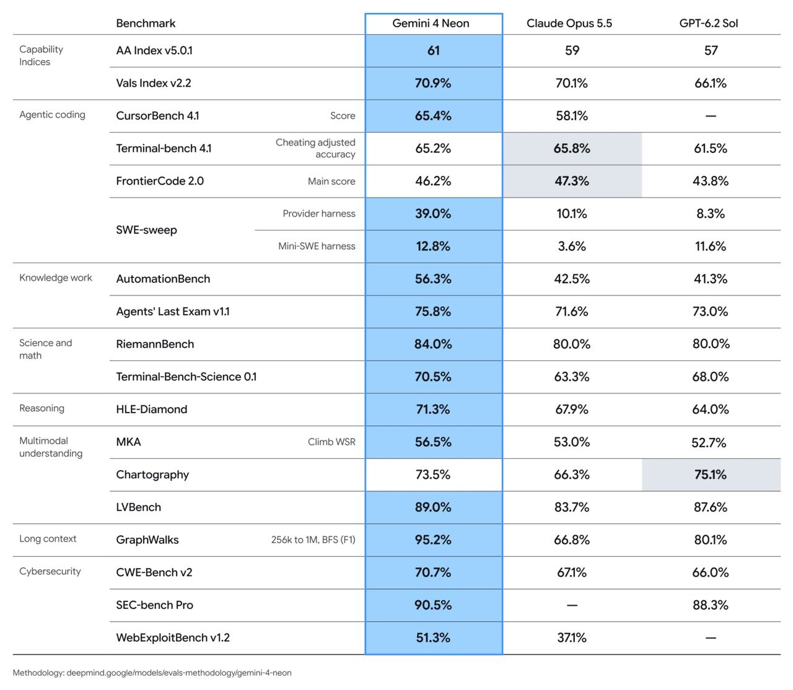
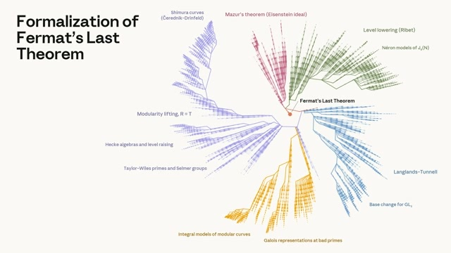
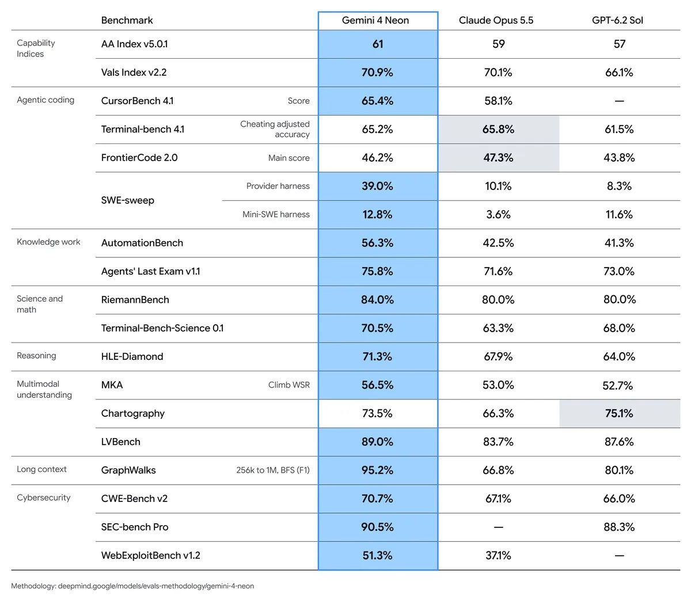
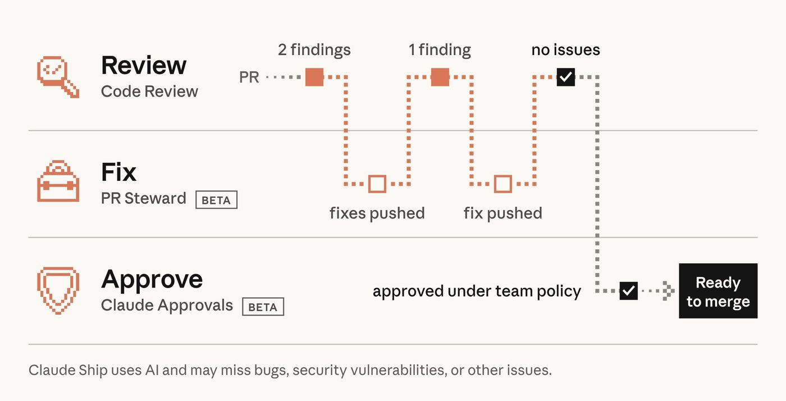
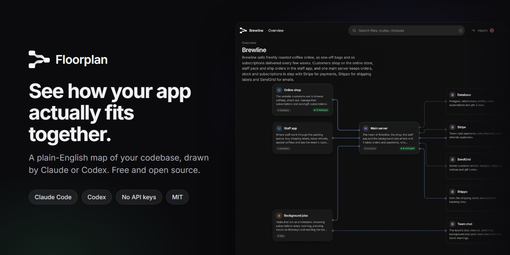
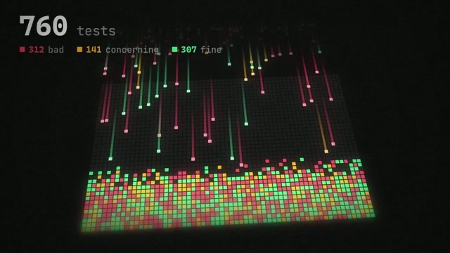
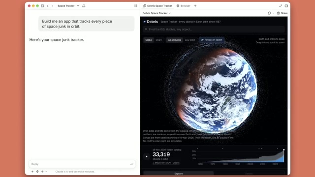

CLAUDE’S PICK

Amazon Aurora PostgreSQL: 책임 있는 AI 제어 설계

RAG 기반 고객 지원 챗봇이 민감한 정보를 포함한 역사적 티켓과 지식 기사를 쿼리할 때 개인정보 보호, 정확성, 안전성, 거버넌스 문제가 발생한다. Amazon Aurora PostgreSQL과 pgvector, Amazon Bedrock Guardrails를 활용해 쿼리 소스, 점수, 가드레일 추적을 SQL로 기록함으로써 RAG 챗봇의 답변을 추적 가능하게 만드는 설계 패턴을 제시한다. Aurora ML을 통해 임베딩 파이프라인을 데이터베이스 계층 내에 유지하면서 책임 있는 AI의 설명 가능성 차원을 구현한다.
핵심 포인트: 핵심 기여: AWS 책임 있는 AI 8가지 차원을 Aurora PostgreSQL 기능에 매핑하고, 데이터 이동 없이 SQL에서 직접 SageMaker 엔드포인트와 Bedrock 모델을 호출하는 Aurora ML 기능으로 책임 있는 AI 운영을 간소화한다.
🔗 aws.amazon.com/blogs/machine-learning/des…
기타 (Others)

StitchRAG — 확산 모델 기반 문맥 압축으로 RAG 성능 향상

검색 증강 생성에서 긴 문맥으로 인한 계산 오버헤드와 노이즈 문제를 해결하는 프레임워크. StitchRAG는 각 문구에 대해 정보 보존과 계산 비용의 트레이드오프를 최적화하여 동적으로 크기를 조정하고, 답변 후보와 쿼리 관련 키워드를 앵커로 추출한 후 텍스트 확산 모델로 선택된 문장들을 연결하여 자연스럽고 응집력 있는 문맥을 생성한다.
핵심 포인트: 핵심 성과: 5개의 개방형 질의응답 벤치마크에서 다양한 다단계 및 압축 기반라인을 일관되게 초과 성능 달성. 동적 크기 할당, 앵커 보존, 확산 기반 연결의 효과를 광범위한 절제 연구로 입증.
논문 (Papers)

Gemini 4 Neon — 최상위 성능 유지하며 작업 비용 32% 절감

구글이 복잡한 업무 처리 시 비용 효율성을 개선한 Gemini 4 Neon을 출시했다. 종합 지능 평가에서 61점으로 3위를 기록하며 Gemini 4 Carbon을 소폭 앞섰고, 기본 추론 단계에서 작업당 비용을 32% 절감했다. 기업 업무 자동화 벤치에서 56.3% 성공률로 1위를 차지했으며, 코딩, 과학 연구, 법률 조사 등 다양한 분야에서 최고 수준의 성능을 기록했다.
핵심 포인트: 핵심 성과: 종합 지능 평가 61점(3위), 기업 업무 자동화 성공률 56.3%(1위), 작업당 비용 55% 절감(0.88달러 vs 1.94달러), 코딩 에이전트 지수 58.6점(1위) 달성
🔗 aitimes.com/news/articleView.html?idxno=2…
기타 (Others)
AI & RESEARCH
Claude — AI와 함께 167년 미해결 난제 리만 가설 증명

167년간 수학계에서 해결하지 못한 리만 가설이 AI 모델 Claude와 인류 최고의 수학자들의 협력으로 증명되었다. 앤트로픽의 수학자 레벤트 알푀게가 Claude와 함께 리만 가설뿐만 아니라 일반화된 리만 가설까지 증명했으며, 증명 전체를 Lean 형식화 코드로 14개 파일로 공개했다. MIT 수학자가 하루 만에 독립 검증에 착수하면서 이는 수학과 인공지능 협력의 역사적 성과로 평가되고 있다.
핵심 포인트: 핵심 성과: 1859년 리만이 제시한 이후 167년 동안 미해결된 밀레니엄 문제를 Claude와의 협력으로 해결했으며, 컴퓨터 검증 가능한 Lean 형식화 증명코드를 완전히 공개했다.
🔗 threads.com/@choi.openai/post/Df-rRcrE5mn…
기타 (Others)
Gemini 4 Neon — 구글의 고속 AI 모델, 6일 만에 출시

구글 딥마인드가 Gemini 4 Neon을 공개했으며, 이는 복잡한 소프트웨어 엔지니어링과 지식 업무, 과학 연구를 빠르게 처리하는 모델이다. Artificial Analysis 종합 지능 지수에서 61점으로 3위에 올랐으며, Claude Fable 5.2와 Opus 5.5를 코딩 에이전트 지수에서 초과했다. 주목할 점은 출시 속도로, Hydrogen 출시 6일 후 공개되었으며 7주 동안 4개 모델을 연달아 출시하는 방식으로 모델 카드에 명시된 바와 같이 Carbon을 기반으로 가격과 속도를 최적화한 구조를 채택했다.
핵심 포인트: 핵심 성과: Artificial Analysis Intelligence Index에서 61점으로 3위 달성, 100만 토큰당 입력 3달러의 경쟁력 있는 가격 책정, Hydrogen 출시 후 6일 만에 공개되며 모델 간 출시 간격 급속도 단축.
🔗 blog.google/innovation-and-ai/models-and…
블로그 (Blog)
DEVTOOLS & OPEN SOURCE
Gemini API: Tool Retrieval로 토큰 효율성 극대화
AI 에이전트가 수백 개의 도구에 접속할 때 모든 파라미터 스키마를 매번 전송하면 입력 토큰 수가 증가하고 지연 시간이 늘어나는 문제를 해결한다. Tool Retrieval은 deferloading 기능으로 도구의 이름과 설명만 먼저 전송하고, 에이전트가 필요한 도구를 선택하면 그때 해당 스키마만 로드하여 단일 API 호출 내에서 완료한다. 이를 통해 토큰 비용 절감과 도구 선택 정확도 향상을 동시에 달성한다.
핵심 포인트: 핵심 기여: Gemini API의 Interactions API에서 toolsearch와 deferloading을 조합하여 수백 개 도구의 풀 라이브러리 관리 시 입력 토큰 비용을 대폭 절감하면서 단일 요청 내 도구 검색, 스키마 로드, 함수 호출을 모두 처리 가능하게 함.
🔗 blog.google/innovation-and-ai/technology…
기타 (Others)
newmean-pii — LLM 호출 전 개인정보 자동 마스킹 도구
LLM 호출 시 의도치 않게 개인정보가 외부 서버로 전송되는 보안 위험을 해결하는 경량 PII 마스킹 도구. newmean-pii는 별도 서버나 API 키 없이 에이전트 내부에서 직접 실행되며, 2.6~15.5MB의 초경량 모델로 54개 언어의 이름, 전화번호, 이메일, 주소를 자동으로 가려준다. Python과 JavaScript 모두 지원하며 LangChain 공식 문서에 정식 등재되었다.
핵심 포인트: 핵심 성과: 54개 언어, 11개 레이블 지원, 2.6MB(nano)~15.5MB(large) 4가지 모델 크기로 브라우저 및 온디바이스 WebAssembly 실행 가능. 원본 텍스트가 사용자 기기를 벗어나지 않으면서도 완전한 PII 마스킹 구현.
GitHub
Claude Ship — PR 리뷰부터 승인까지 AI가 자동 처리

개발 팀의 코드 리뷰 병목을 해결하기 위해 앤트로픽이 Claude Ship을 베타로 출시했다. /ship 명령어 하나로 Claude가 풀 리퀘스트를 열고 리뷰한 뒤 발견된 문제를 직접 수정하며, 팀이 정의한 승인 정책에 따라 일상적인 변경사항은 자동으로 승인한다. Claude Code 팀의 실제 사용 결과 병합된 PR이 2배 이상 증가했고 되돌린 비율은 40% 이상 감소했다.
핵심 포인트: 핵심 성과: Claude Code 팀에서 6월~9월 사이 병합된 PR이 2배 이상 증가했고, 되돌린 변경 비율은 40% 이상 감소. 팀·엔터프라이즈 요금제 사용자의 GitHub 저장소에서 토큰 단위 과금으로 이용 가능.
🔗 claude.com/resources/articles/introducing…
기타 (Others)
Floorplan — AI가 그려주는 코드베이스 인터랙티브 지도

AI와 함께 만든 애플리케이션의 구조와 데이터 흐름을 파악하기 어려운 문제를 해결하는 오픈소스 도구. Claude Code나 Codex가 코드베이스를 분석하여 부품, 파일, 웹 요청마다 평문 영어 이름을 붙이고 상호 연결 관계를 보여주는 인터랙티브 지도로 시각화한다. 코드에 하드코딩된 API 키나 공개 데이터베이스 같은 보안 문제를 자동으로 감지하고, AI가 최근 수정한 부분을 녹색으로 하이라이트하는 기능도 제공한다.
핵심 포인트: 핵심 기여: Claude 또는 Codex를 활용한 자동 코드 맵핑으로 복잡한 애플리케이션 구조를 한 장의 지도로 표현하고, 보안 취약점 감지와 변경 사항 추적 기능을 통합하여 개발 협업 효율성을 향상시킨다. MIT 라이선스 오픈소스로 Node.js 18 이상에서 무료로 사용 가능하다.
🔗 github.com/haydenschmitty/floorplan
GitHub
Claude FDE — 엔트로픽의 AI 파일럿 구축 공식 교육 과정 공개
기업에 AI를 도입할 때 모델의 한계를 파악하고 실제 고객 환경에서 작동하는 파일럿을 구축해야 하는 과제가 있다. 앤트로픽이 파트너사 개발자를 위해 Claude FDE 공식 교육 과정을 온라인에 공개했으며, 약 9.5시간의 11개 강의로 모델 한계 파악부터 Claude Code를 활용한 고객사 환경의 파일럿 직접 구축까지 실무 중심으로 다룬다. 자기 주도 학습 형태로 제공되어 AI를 실제 기업 현장에 도입하려는 엔지니어가 즉시 활용할 수 있다.
핵심 포인트: 핵심 성과: 약 9.5시간 분량의 체계적 11개 강의로 고객 사용 사례부터 실제 작동하는 파일럿 배포까지의 전체 프로세스를 커버하며, 개발자가 파일럿 계획, 성공 지표 정의, 첫 번째 출시 전략까지 수립할 수 있도록 구성했다.
🔗 anthropic-partners.skilljar.com/path/clau…
기타 (Others)
Claude Code — AI 도구 호출을 JavaScript로 자동화하는 Code Mode 실험 기능
Claude가 파일 검색, 수정, 테스트 등 도구 호출 작업을 단계별로 처리할 때 중간 결과마다 AI에게 확인받아야 하는 비효율 문제를 해결한다. Code Mode에서는 Claude가 여러 도구 호출을 연결하는 JavaScript 코드를 작성해 한 번에 실행하므로 도구 호출이 많은 작업에서 시간과 비용을 대폭 절감할 수 있다.
핵심 포인트: 핵심 성과: 도구 호출 작업을 JavaScript 코드로 자동화하여 순차 처리에서 병렬 처리로 전환, 중간 결과 확인 오버헤드 제거로 시간 및 비용 단축.
🔗 code.claude.com/docs/en/code-mode
기타 (Others)
prune-tests — AI 코드 생성으로 인한 불필요한 테스트 자동 제거

AI로 빠르게 생성된 코드는 깨진 테스트가 증가하여 코드 리뷰 시 반복적인 테스트 수정이 필요한 문제가 발생한다. prune-tests는 이를 해결하기 위해 행동을 검증하지 않는 불필요한 테스트를 자동으로 식별하고 제거하는 AI 스킬이다. 과거 제거된 코드가 사라졌는지 확인하는 테스트, 중복된 테스트, 절대 실패할 수 없는 테스트 등 세 가지 주요 카테고리의 테스트를 제거하며, 토큰 소비를 고려해 변경된 코드 부분에만 선택적으로 적용할 수 있다.
핵심 포인트: 핵심 기여: 불필요한 테스트 자동 감지로 코드 리뷰 효율성 증대 및 AI 생성 코드의 테스트 유지보수 비용 절감. Claude Opus로 개발되어 복잡한 테스트 의존성 분석을 정확히 수행.
🔗 github.com/caldoai/skills/blob/main/skill…
GitHub
ENGINEERING
PHP — 11월 긴급 보안 업데이트, 모든 버전에 CRITICAL 취약점 포함
PHP 보안팀이 11월 19일 긴급 보안 업데이트를 예고했다. 지원 중인 모든 PHP 버전에 영향을 주는 취약점들이 발견되었으며, 가장 높은 위험 등급인 CRITICAL 취약점도 포함되었다. 해당 취약점은 기본 설정이 아닌 특수한 환경에서 발생하지만, PHP를 운영 중인 시스템은 패치 적용 여부 확인, 실제 실행 프로세스 점검, 침해 흔적 조사 등을 통해 종합적으로 대응해야 한다.
핵심 포인트: 핵심 성과: PHP 보안팀이 모든 지원 버전에 영향을 주는 CRITICAL 취약점을 포함한 긴급 보안 업데이트 예고, 패치 적용 후에도 이전 침입 흔적이 자동 제거되지 않아 추가 점검 필요.
기타 (Others)
PRODUCT & INDUSTRY
Claude — AI로 만든 앱을 Mac·Windows에 직접 설치

Claude 사용자가 AI로 생성한 도구를 데스크톱 앱처럼 직접 설치하고 실행할 수 없다는 문제를 해결한다. Install as app 기능을 통해 artifact를 Mac과 Windows 네이티브 앱으로 변환하면, 별도의 배포 작업이나 API 키 설정 없이 일정 관리, 외부 서비스 연동 등 다양한 도구를 즉시 활용할 수 있다. 앱은 자동 업데이트되며 모든 요금제에서 베타로 제공된다.
핵심 포인트: 핵심 성과: Claude artifact를 클릭 한 번으로 독립적인 데스크톱 앱으로 변환하여 배포 작업 제거, API 키 설정 불필요, 모든 요금제에서 베타 운영 중
🔗 claude.com/ko/resources/articles/install…
기타 (Others)
ChatGPT for Accounting — 회계 반복업무 자동화
회계 담당자들이 영수증 입력, 거래 대조, 보고서 작성 등 반복적인 수작업에 소요하는 시간이 많은 문제를 해결하기 위해 오픈AI가 ChatGPT for Accounting을 출시했다. QuickBooks, Xero, NetSuite 등 기존 회계 프로그램과 연동하여 송장 처리 초안 생성, 중복 거래 감지, 월말 보고서 작성 등을 자동으로 수행한다. 최종 승인 및 판단은 인간이 담당하며, 회계 담당자가 핵심 업무에 집중할 수 있는 환경을 제공한다.
핵심 포인트: 핵심 성과: 회계 프로그램 플러그인 연동으로 송장 처리, 거래 대조, 보고서 작성 자동화 및 중복 거래·누락 항목 자동 검출을 통해 회계 담당자의 반복업무 대폭 감소
🔗 openai.com/business/solutions/accounting/
기타 (Others)